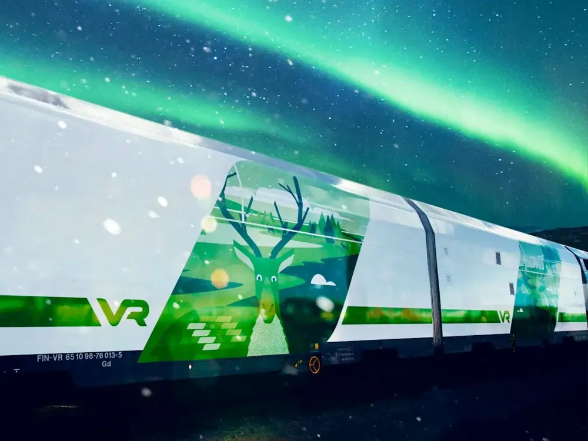
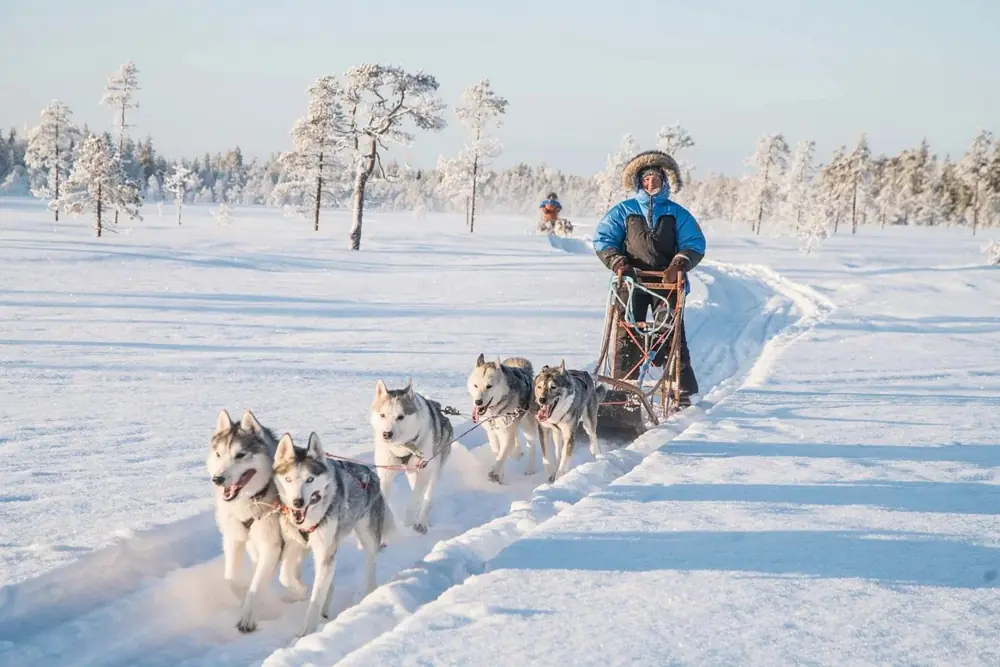
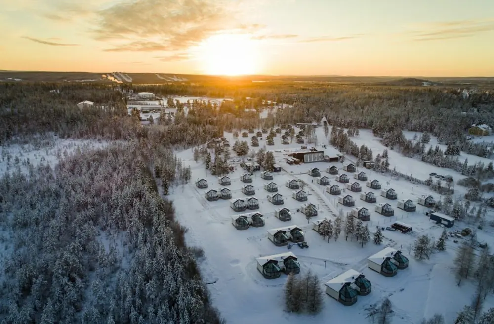
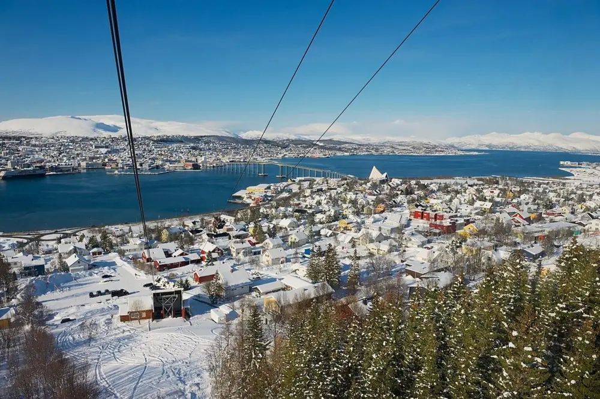
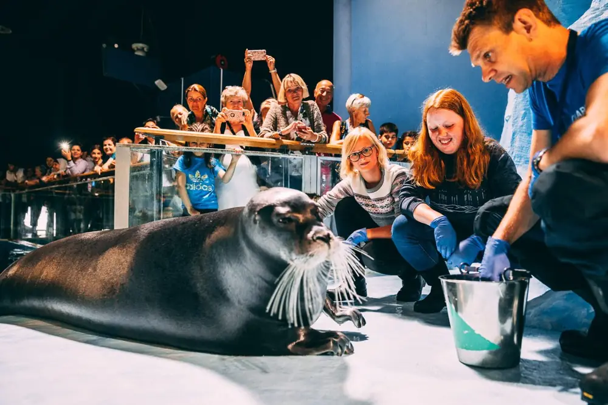

這趟旅行，為每個人保留喜歡的風景
極光｜兩座北極基地羅瓦涅米 4 晚＋特羅姆瑟 3 晚。先安排兩次主追光機會，再留補追空間；晴空、雲量與太陽活動比排滿團更重要。
親子｜每天都有期待見聖誕老人、玩雪圈、搭短程哈士奇雪橇、餵馴鹿、看海豹、探索沉船與童話列車。
大人｜吃好、逛好、睡好拉普蘭料理、北挪威海鮮、瑞典肉丸與咖啡。芬蘭設計品牌與瑞典精品各留專門時段；2/19 下午 Bibliotekstan、Louis Vuitton 候選與 NK 百貨。
成員：你與太太、太太姐姐（約 40 歲），兩位約 65 歲父母，以及 9 歲男孩、6 歲女孩，共 7 人。以大眾交通、預約接送與有導遊的活動為主；冬季跨國長途以飛機銜接。
本版採 Rovaniemi 4 晚（含玻璃屋 1 晚）、Tromsø 3 晚、Stockholm 3 晚。芬蘭保留雪地親子步調，挪威有完整峽灣日；瑞典 2/18 親子雙館、2/19 上午科技館，13:00–17:30 固定精品購物。玻璃屋優先安排，仍待房型與預算確認。
版本性質：可執行的規劃草案，尚未代訂。交通資料依你提供的訂單與最新航班截圖；僅已確認購買者標為已訂；其餘飯店、餐廳、活動與北歐內陸機票皆為建議。每日時間是交通與停留推估，不是業者已確認時刻。查核日期：2026/9/16；2027 營業時間、班次與票價須於預訂時重查。
交通總表｜已訂與待訂一眼看清
所有時間皆為當地時間；跨日已列日期。Gate 指登機門，夜車使用月台。截圖沒有的資訊不推填。
2 月時區：台灣 UTC+8；芬蘭 UTC+2；荷蘭、挪威、瑞典 UTC+1；英國 UTC+0。AMS 轉機 3 小時 30 分，LHR 轉機 4 小時 50 分，均依截圖計算，並非聯程與行李直掛的保證。
內陸航班：2/14 RVN–TOS 直飛候選仍待選班；2/17 已依截圖選定芬航 AY936＋AY811，09:20–13:35，HEL 轉機 80 分鐘，尚未確認出票。Economy Classic 截圖參考價 €174.88，非七人總價與即時報價。
住宿總表｜以位置與家庭房為優先
標準需求建議先詢價：四人家庭房 1 間＋雙人房 1 間＋單人房 1 間；若姐姐願與父母同房，可比價合法三人房。每一家都要按 5 成人＋9 歲＋6 歲填寫，不能只用成人數搜尋。請確認電梯、早餐、取消條件、床位與浴室配置。
每日行程｜有節奏，也有彈性
_4 更新：芬蘭 4 晚＋挪威 3 晚＋瑞典 3 晚；2/17 芬航 AY936＋AY811，HEL 轉機 80 分。2/15 峽灣、2/16 城市早休息；2/19 下午保留 4.5 小時精品購物（含咖啡）。每日照片、街道地圖與 Google Maps 連結同步更新。
戶外約 45–60 分鐘就穿插暖室休息；移動估算已考慮家庭步調，但暴雪與排隊可能延長。夜間追光可以依雲況交換日期。
DAY01
2/7（日）｜台北出發・把精神留給北歐
住宿：機上 · 交通日
華航班機・啟程與歸途航空公司主題照片，非本次航班的機型承諾。 照片來源：Airways／Max Langley ↗可放大查看街道、周邊地標與商店。點編號顯示景點；右側「定位」在本頁放大，「Google Maps」另開位置與導航。底圖需連網。
當日街道地圖捲到此處後載入，或按「開啟／重試地圖」。
地圖尚未啟用；Google Maps 連結隨時可用。
- 1
- 2
編號為景點索引，重訪與回飯店的順序請依時間表；地圖標記供位置概覽，入口以現場與 Google Maps 確認。
今日餐飲：交通為主，機場晚餐與機上餐。
航廈、Gate、行李直掛至 HEL 與兩段票是否聯程，請依電子機票確認。
DAY02
2/8（一）｜抵達赫爾辛基・輕鬆調時差
住宿：Scandic Grand Central Helsinki｜已訂 · 低強度
 赫爾辛基・冬日大教堂城市主題照片；首日仍以休息為主，大教堂安排在隔日。 照片來源：Reveel ↗
赫爾辛基・冬日大教堂城市主題照片；首日仍以休息為主，大教堂安排在隔日。 照片來源：Reveel ↗可放大查看街道、周邊地標與商店。點編號顯示景點；右側「定位」在本頁放大，「Google Maps」另開位置與導航。底圖需連網。
當日街道地圖捲到此處後載入，或按「開啟／重試地圖」。
地圖尚未啟用；Google Maps 連結隨時可用。
- 1
- 2
- 3
Scandic Grand Central Helsinki｜已訂
編號為景點索引，重訪與回飯店的順序請依時間表；地圖標記供位置概覽，入口以現場與 Google Maps 確認。
今日餐飲：早餐：AMS 機場；午餐：機上自理／先買輕食；晚餐：飯店或中央車站旁熱食。
若航班延誤，取消散步，直接用餐與休息。
DAY03
2/9（二）｜芬蘭設計與城市散步・夜車入北極
住宿：VR 臥鋪夜車｜已訂 · 中低強度

北極特快車・在臥鋪裡迎接拉普蘭情境宣傳圖片，不代表搭車時一定可見極光。 照片來源：VR 官方宣傳圖 ↗可放大查看街道、周邊地標與商店。點編號顯示景點；右側「定位」在本頁放大，「Google Maps」另開位置與導航。底圖需連網。
當日街道地圖捲到此處後載入，或按「開啟／重試地圖」。
地圖尚未啟用；Google Maps 連結隨時可用。
- 1
Scandic Grand Central Helsinki｜已訂 - 2
- 3
- 4
Stockmann／Fazer Café 8th Floor - 5
編號為景點索引，重訪與回飯店的順序請依時間表；地圖標記供位置概覽，入口以現場與 Google Maps 確認。
今日餐飲：早餐：飯店；午餐：Fazer／Stockmann；晚餐：中央車站周邊；夜車備水果、麵包。
不排離市區較遠的景點；餐車時間依 VR 當班公告。 已訂車次 PYO 265；本次提供票面確認第 27 車廂下層、105–106 臥鋪（Whole cabin）。其他艙位與七人分配以全套車票確認。
DAY04
2/10（三）｜抵達拉普蘭・聖誕老人與北極圈
住宿：羅瓦涅米市中心｜待訂 · 中低強度
 聖誕老人村・走進雪國童話聖誕老人村冬景；現場積雪及燈光依日期而異。 照片來源：LOT Polish Airlines ↗
聖誕老人村・走進雪國童話聖誕老人村冬景；現場積雪及燈光依日期而異。 照片來源：LOT Polish Airlines ↗可放大查看街道、周邊地標與商店。點編號顯示景點；右側「定位」在本頁放大，「Google Maps」另開位置與導航。底圖需連網。
當日街道地圖捲到此處後載入，或按「開啟／重試地圖」。
地圖尚未啟用；Google Maps 連結隨時可用。
- 1
- 2
Scandic Rovaniemi City｜候選 - 3
Santa Claus Office 聖誕老人辦公室 - 4
- 5
- 6
編號為景點索引，重訪與回飯店的順序請依時間表；地圖標記供位置概覽，入口以現場與 Google Maps 確認。
今日餐飲：早餐：飯店加購；午餐：村內；晚餐：Nili，7 人先訂位。
若夜車睡不好，上午改直接休息，聖誕老人見面移到 2/11 上午。
DAY05
2/11（四）｜Snowman World・孩子的雪地樂園
住宿：羅瓦涅米市中心｜待訂 · 中強度
 Snowman World・雪圈與冰雪滑道滑道依身高、年齡與現場雪況開放。 照片來源：Visit Rovaniemi／Visit Finland ↗
Snowman World・雪圈與冰雪滑道滑道依身高、年齡與現場雪況開放。 照片來源：Visit Rovaniemi／Visit Finland ↗可放大查看街道、周邊地標與商店。點編號顯示景點；右側「定位」在本頁放大，「Google Maps」另開位置與導航。底圖需連網。
當日街道地圖捲到此處後載入，或按「開啟／重試地圖」。
地圖尚未啟用；Google Maps 連結隨時可用。
- 1
Scandic Rovaniemi City｜候選 - 2
- 3
編號為景點索引，重訪與回飯店的順序請依時間表；地圖標記供位置概覽，入口以現場與 Google Maps 確認。
今日餐飲：午餐：園區或村內暖室；晚餐：市區簡餐，追光前先吃。
Snowman World 公布 2027/1/7–3/17 為 11:00–19:00，仍受天候影響。若團只能深夜返程，改短時私人行程或只由部分大人參加。
DAY06
2/12（五）｜哈士奇短程體驗・拉普蘭文化
住宿：羅瓦涅米市中心｜待訂 · 中強度

哈士奇雪橇・穿越拉普蘭雪原活動示意，非已選定業者；本行程優先由業者駕駛的短程乘坐。 照片來源：Arctic Attitude ↗可放大查看街道、周邊地標與商店。點編號顯示景點；右側「定位」在本頁放大，「Google Maps」另開位置與導航。底圖需連網。
當日街道地圖捲到此處後載入，或按「開啟／重試地圖」。
地圖尚未啟用；Google Maps 連結隨時可用。
- 1
Scandic Rovaniemi City｜候選 - 2
編號為景點索引，重訪與回飯店的順序請依時間表；地圖標記供位置概覽，入口以現場與 Google Maps 確認。
今日餐飲：哈士奇團熱飲不等於午餐；中午回市區吃完整一餐。
需書面確認兩位孩子能同乘、每台座位、毯子與長輩上下車協助；不安排全員自駕雪橇。
DAY07
2/13（六）｜馴鹿短程與玻璃屋・把下午留給住宿
住宿：Santa’s Igloos Arctic Circle｜候選待訂 · 家庭步調；時間為規劃估算

玻璃屋・在暖房裡等待星空候選住宿 Santa’s Igloos Arctic Circle，實際房型與空房待訂。 照片來源：Santa Claus Village ↗可放大查看街道、周邊地標與商店。點編號顯示景點；右側「定位」在本頁放大，「Google Maps」另開位置與導航。底圖需連網。
當日街道地圖捲到此處後載入，或按「開啟／重試地圖」。
地圖尚未啟用；Google Maps 連結隨時可用。
- 1
Scandic Rovaniemi City｜候選 - 2
Santa’s Igloos／Arctic Eye｜候選
馴鹿業者未選定，地圖只標示住宿；不以猜測位置代替農場。
今日餐飲：午餐：活動附近暖室餐廳；晚餐：Arctic Eye／住宿餐廳候選。
玻璃屋安排為本版優先住宿體驗，尚未預訂；如房型或預算不合，可續住市區。馴鹿業者未選定，不在地圖虛構農場位置。
DAY08
2/14（日）｜飛往特羅姆瑟・北挪威港都
住宿：特羅姆瑟市中心｜待訂 · 交通日

特羅姆瑟・雪山與海灣的城市Fjellheisen 眺望城市的主題照片；纜車安排於 2/16 天候許可時。 照片來源：Reisroutes ↗可放大查看街道、周邊地標與商店。點編號顯示景點；右側「定位」在本頁放大，「Google Maps」另開位置與導航。底圖需連網。
當日街道地圖捲到此處後載入，或按「開啟／重試地圖」。
地圖尚未啟用；Google Maps 連結隨時可用。
- 1
Santa’s Igloos／Arctic Eye｜候選 - 2
- 3
- 4
編號為景點索引，重訪與回飯店的順序請依時間表；地圖標記供位置概覽，入口以現場與 Google Maps 確認。
今日餐飲：早餐：飯店；午餐：依班機在機場／市區；晚餐：住宿附近。
芬蘭 → 挪威，時鐘撥慢 1 小時。當日機位未核實；若直飛無位，先查 HEL 聯程，必要時調整 2/13–2/14 分配。
DAY09
2/15（一）｜Kvaløya・Sommarøy 峽灣海岸一日遊
住宿：特羅姆瑟市中心｜待訂 · 家庭步調；時間為規劃估算

Polaria・與北極海洋生命相遇海豹主題照片，實際餵食時段以館方公告為準。 照片來源：Northern Norway Tourist Board ↗本日照片為 Tromsø 港都主題示意；峽灣停靠景觀依當日路線。可放大查看街道、周邊地標與商店。點編號顯示景點；右側「定位」在本頁放大，「Google Maps」另開位置與導航。底圖需連網。
當日街道地圖捲到此處後載入，或按「開啟／重試地圖」。
地圖尚未啟用；Google Maps 連結隨時可用。
- 1
- 2
- 3
- 4
- 5
Kvaløya 為區域示意，並非指定下車點；導遊依天候安排停靠。
今日餐飲：午餐：依峽灣團停靠餐廳／自備簡餐；晚餐：Fiskekompaniet 候選。
2/15 與 2/16 白天可依天候交換。若極光尚未看見且要在 2/15 晚加團，須縮短白天活動或只由部分大人參加；2/16 晚固定早休息。
DAY10
2/16（二）｜海豹、港都與纜車・早睡準備搭機
住宿：特羅姆瑟市中心｜待訂 · 家庭步調；時間為規劃估算
Polaria・與北極海洋生命相遇海豹主題照片，實際餵食時段以館方公告為準。 照片來源：Northern Norway Tourist Board ↗可放大查看街道、周邊地標與商店。點編號顯示景點；右側「定位」在本頁放大，「Google Maps」另開位置與導航。底圖需連網。
當日街道地圖捲到此處後載入，或按「開啟／重試地圖」。
地圖尚未啟用；Google Maps 連結隨時可用。
- 1
- 2
- 3
- 4
- 5
編號為景點索引，重訪與回飯店的順序請依時間表；地圖標記供位置概覽，入口以現場與 Google Maps 確認。
今日餐飲：午餐：市區海鮮／熱食；下午咖啡；晚餐：飯店附近。
2/17 芬航 09:20 起飛，因此 2/16 不安排夜間極光團。若天氣迫使峽灣日移到今天，取消 Polaria／纜車，不把兩天景點塞成一天。
DAY11
2/17（三）｜芬航 AY936＋AY811・經赫爾辛基到瑞典
住宿：Scandic Continental／中央車站附近｜待訂 · 家庭步調；時間為規劃估算
 Vasa・看見真正的十七世紀大船館內主題照片，當日也安排鄰近的 Junibacken。 照片來源：Vasa Museum ↗抵達瑞典，照片為斯德哥爾摩主題；今日不安排入館。
Vasa・看見真正的十七世紀大船館內主題照片，當日也安排鄰近的 Junibacken。 照片來源：Vasa Museum ↗抵達瑞典，照片為斯德哥爾摩主題；今日不安排入館。可放大查看街道、周邊地標與商店。點編號顯示景點；右側「定位」在本頁放大，「Google Maps」另開位置與導航。底圖需連網。
當日街道地圖捲到此處後載入，或按「開啟／重試地圖」。
地圖尚未啟用；Google Maps 連結隨時可用。
- 1
- 2
- 3
- 4
- 5
- 6
Gamla Stan／Stortorget 老城廣場 - 7
Meatballs for the People｜候選
依截圖：AY936＋AY811，HEL 轉機 80 分鐘。Gate 待公布。
今日餐飲：早餐：飯店早餐盒；午餐：機場簡餐；晚餐：瑞典肉丸／飯店附近熱食。
依你提供的截圖選用 Economy Classic（Q），票價參考 €174.88；未確認出票與七人總价。含 1 件 23 kg 托運，小包＋登機箱合計 8 kg；選位與改票依票規。這組不是 AY542，沒有截圖中未列的 Rovaniemi 停靠。
DAY12
2/18（四）｜沉船探險與童話列車
住宿：斯德哥爾摩中央車站附近｜待訂 · 中強度
Vasa・看見真正的十七世紀大船館內主題照片，當日也安排鄰近的 Junibacken。 照片來源：Vasa Museum ↗可放大查看街道、周邊地標與商店。點編號顯示景點；右側「定位」在本頁放大，「Google Maps」另開位置與導航。底圖需連網。
當日街道地圖捲到此處後載入，或按「開啟／重試地圖」。
地圖尚未啟用；Google Maps 連結隨時可用。
- 1
- 2
- 3
編號為景點索引，重訪與回飯店的順序請依時間表；地圖標記供位置概覽，入口以現場與 Google Maps 確認。
今日餐飲：午餐：Vasa 周邊；晚餐：飯店周邊瑞典料理。
Junibacken 需核對 2027 入場及故事列車規則。Vasa 目前 0–18 歲免費，仍以出發時票價為準。
DAY13
2/19（五）｜上午親子科學・下午歐洲精品半日
住宿：斯德哥爾摩中央車站附近｜待訂 · 家庭步調；時間為規劃估算
 斯德哥爾摩・老城的彩色立面老城建築參考照片，拍攝於非冬季；2 月光線與積雪不同。 照片來源：Travelzoo／iStock ↗
斯德哥爾摩・老城的彩色立面老城建築參考照片，拍攝於非冬季；2 月光線與積雪不同。 照片來源：Travelzoo／iStock ↗可放大查看街道、周邊地標與商店。點編號顯示景點；右側「定位」在本頁放大，「Google Maps」另開位置與導航。底圖需連網。
當日街道地圖捲到此處後載入，或按「開啟／重試地圖」。
地圖尚未啟用；Google Maps 連結隨時可用。
- 1
- 2
- 3
- 4
- 5
13:00–17:30 精品購物固定保留。圖標為位置概覽，商店入口與庫存以店家確認。
今日餐飲：午餐：科技館／附近；下午：精品區 Fika；晚餐：中央車站附近訂位餐廳。
下午精品購物是固定保留主軸，不再加入 Uppsala 或遠郊 outlet。孩子若想多玩，可由一名願意的成人延長科技館停留，再於飯店會合；不預設長輩負責顧小孩。上午若晚開館，縮短科技館而不吃掉半天購物。
DAY14
2/20（六）｜斯德哥爾摩 → 倫敦 → 台北
住宿：機上 · 交通日
華航班機・啟程與歸途航空公司主題照片，非本次航班的機型承諾。 照片來源：Airways／Max Langley ↗可放大查看街道、周邊地標與商店。點編號顯示景點；右側「定位」在本頁放大，「Google Maps」另開位置與導航。底圖需連網。
當日街道地圖捲到此處後載入，或按「開啟／重試地圖」。
地圖尚未啟用；Google Maps 連結隨時可用。
- 1
- 2
- 3
- 4
編號為景點索引，重訪與回飯店的順序請依時間表；地圖標記供位置概覽，入口以現場與 Google Maps 確認。
今日餐飲：午餐：ARN；晚餐：LHR／機上。
若分開出票且需入境取行李重掛，流程與所需入境文件不同；先請航空公司依護照與票務確認，勿假設可全程空側轉機。
DAY15
2/21（日）｜抵達台灣・帶著雪國回憶回家
住宿：溫暖的家 · 交通日
華航班機・啟程與歸途航空公司主題照片，非本次航班的機型承諾。 照片來源：Airways／Max Langley ↗可放大查看街道、周邊地標與商店。點編號顯示景點；右側「定位」在本頁放大，「Google Maps」另開位置與導航。底圖需連網。
當日街道地圖捲到此處後載入，或按「開啟／重試地圖」。
地圖尚未啟用；Google Maps 連結隨時可用。
- 1
編號為景點索引，重訪與回飯店的順序請依時間表；地圖標記供位置概覽，入口以現場與 Google Maps 確認。
今日餐飲：機上餐；返家後清淡熱食。
接機車也需確認 7 人座位與全數行李空間。
親子與精品｜主行程與替代選擇
2/18 Vasa＋Junibacken；2/19 09:00–11:30 科技館、13:00–17:30 精品半日。Uppsala、Sigtuna 與 Tom Tits 只保留為下次或替代選項，本版不加進兩個完整瑞典日。
精品優先順序：Bibliotekstan／Birger Jarlsgatan → Louis Vuitton 候選（Birger Jarlsgatan 5A）→ NK（Hamngatan 18–20）。先確認心儀品牌的預約與庫存；不承諾特定款式或比台灣便宜。孩子與長輩可由自願成人陪同咖啡／回飯店休息，購物成人不必同時全員結束。
Tekniska museet ↗ · NK 官方網站 ↗ · Sommarøy 候選行程 ↗
預訂順序與家庭執行重點
- 先確認內陸機票：2/14 RVN–TOS 候選、2/17 AY936＋AY811 TOS–HEL–ARN。確認 7 人同班、行李、轉機與取消條件，才鎖定不可退款住宿。
- 再訂住宿：羅瓦涅米 4 晚（可含 1 晚玻璃屋）、特羅姆瑟 3 晚、斯德哥爾摩 3 晚。玻璃屋和家庭房先詢空房，優先可取消方案。
- 預約主要活動：羅瓦涅米家庭極光團、哈士奇短程、Snowman World 與 Junibacken。特羅姆瑟追光依需要加訂；馴鹿短程是 2/13 上午候選；另預約 2/15 峽灣日、科技館與精品店。請業者書面確認 6 歲能參加、接送點、實際時長與取消政策。
- 預約 7 人用餐與接送：Nili、Fiskekompaniet 優先詢位；肉丸店先確認團體訂位／候位規則。尚未確認的餐廳滿位就改同區，避免全家在低溫下等候。
- 出發前再更新交通欄：PYO 265 及第 27 車廂 105–106 已核對；補齊其餘車票與航班出票資料；核對機場航廈、行李直掛及轉機要求。Gate 與月台以當天看板為準。
追光怎麼排2/11 為羅瓦涅米主場；2/12 為備援。2/15 若需特羅姆瑟補追，先調低白天強度；2/16 不追光，為 2/17 早班機休息。固定營地與私人短團先看舒適度，晴空出現再調整。
長輩與小孩排隊、換衣服、上廁所都算時間。冰滑路用防滑裝備，分層穿著；長輩可跳過滑道與雪橇，保留暖室活動。
天氣備案雪地活動停辦改室內博物館、咖啡與購物；纜車停駛不改爬山。遇嚴重交通延誤，先保護 2/20 回程銜接。
餐飲預算抓法
下列是規劃預留額，非餐廳報價，未包含住宿、交通、酒精與活動：芬蘭一般午餐每成人 €18–30、晚餐 €30–60；挪威午餐 NOK 220–350、晚餐 NOK 350–650；瑞典午餐 SEK 160–280、晚餐 SEK 250–450。兒童先估成人的 50–75%，特色套餐可能沒有兒童折扣；以點餐方式與實際菜單調整。
5 成人＋2 孩子可先以約 6–6.5 份成人餐預算抓全家支出。早餐優先選含餐飯店，付費團有沒有含正餐要另外核對。購物預算獨立抓，避免與每日餐費混在一起。
官方資訊與預訂查核入口
已訂航班、飯店日期與夜車時間來源為你提供的截圖。其餘資訊參考以下官方或業者網站；建議時程與移動時間為本行程規劃估算。